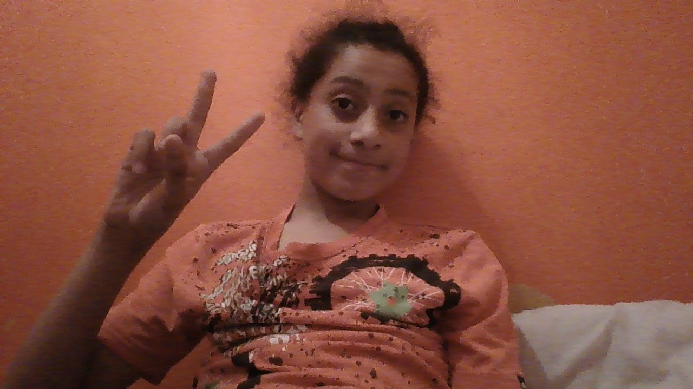

Back to Main Page
My name is Matthew Z Bates and I am a male 13 years old (born on 14 of October 2004). I have learnt most of the coding language HTML5 and some of css. I am currently in my 8th year of secondary nearly going into the summer - holiday. When I am older I would like to go into web development / software engenieer for google. I've been researching about it and found out that you need to know quite a few coding languages (which I have already started doing) and work experience. If I keep coding, working and learning, getting a job at google will be much easier. I am a very 'techy person'. I love tech. Fun fact I am in currently in the top 10% of high achievers in my entire year.
